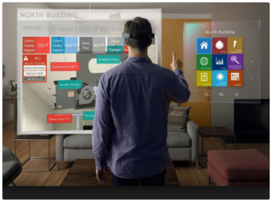

Hologramas

O JavaScript também é capaz de ser utilizado com hologramas. Um exemplo é o HoloJS, da Microsoft, que é um framework para criar aplicações holográficas usando JavaScript e WebGL.
https://github.com/Microsoft/HoloJS